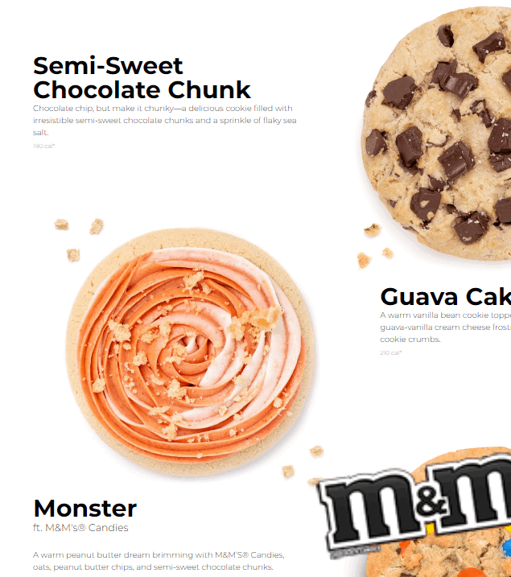
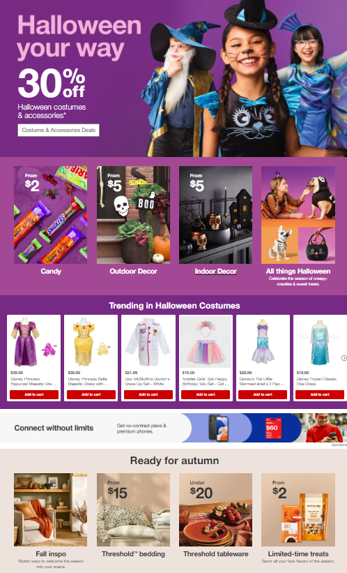

Visual Hierarchy
Crumbl
Visual Hierarchy refers to the arrangement of the elements on the webpage based on importance. The purpose is to guide the observers eye to areas of the page you wish your viewer to see. Some key aspects that help visual hierarchy include size, color, spacing, contrast, alignment, etc. Crumbl does a good job at visual hierarchy by attracting attention to the cookies they are tyring to sell right at the top of their page. They utilize images to draw your attention to cookies that will interest you. They use actual pictures of their cookies that make a z pattern, taking your eyes from the picture to the name and description.
PARC: Repitition
Netflix
PARC refers to proximity, alignment, repetition and contrast. Repitition in a website helps to unify the layout and make the website appear consistent. It helps to avoid confusion and disgust by relying on the same colors, fonts, spacing or heading. Netflix does a good job on this aspect. Their movies and tv shows are laid out the same way. By doing this it allows users of their website to quickly and efficiently find things they want to watch. This design makes it user friendly and avoids frustration from the user. When the user is able to find certain things it makes the user want to keep using their website.
PARC: Contrast
Target
For some areas, repetition and staying consistent is important. However, when striving to emphasize the difference between two items it's important to use contrast. Contrast needs to be used especially within text and background. If the colors are the same the viewer won't be able to read your website. Target does a good job at using various colors that demonstrate various seasons and holidays. This will help the viewer understand and grasp quickly what Target is selling at the moment. The halloween items have a background color of purple. Whereas, the autumn items use different shades of tans and browns. Everything on their page is well designed and easy to read.